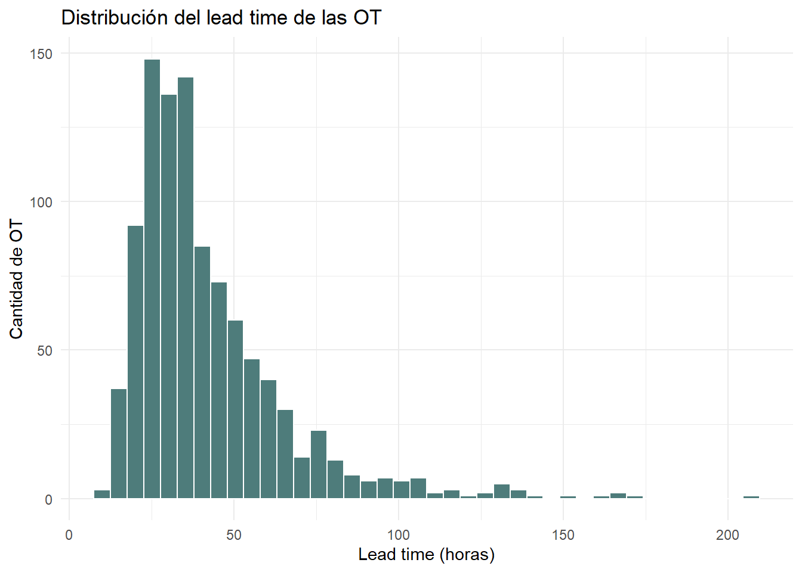
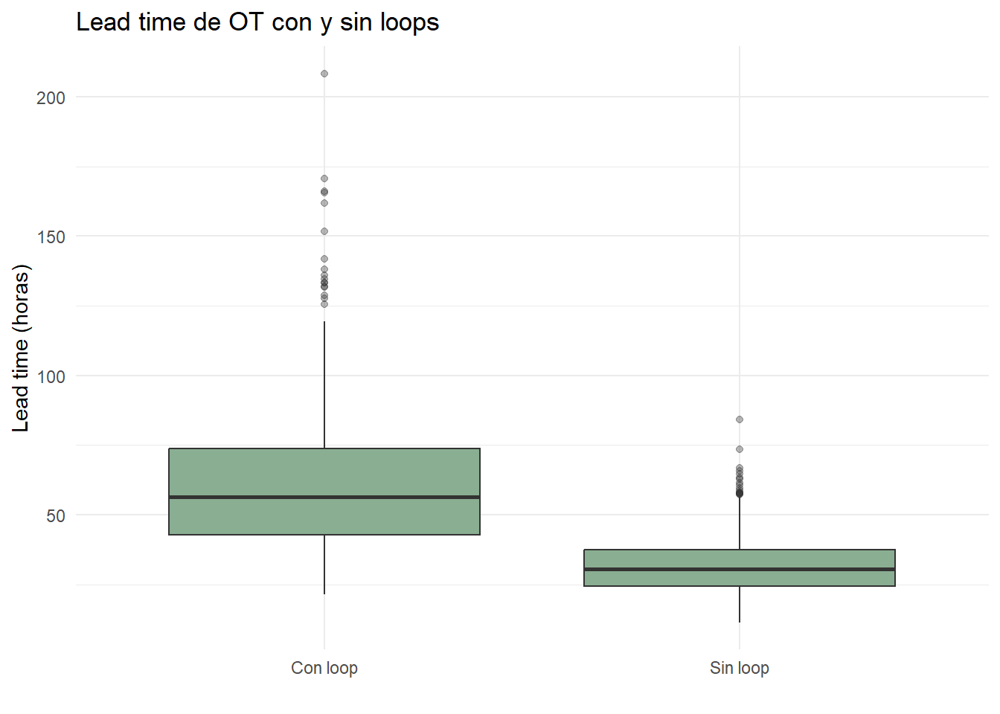
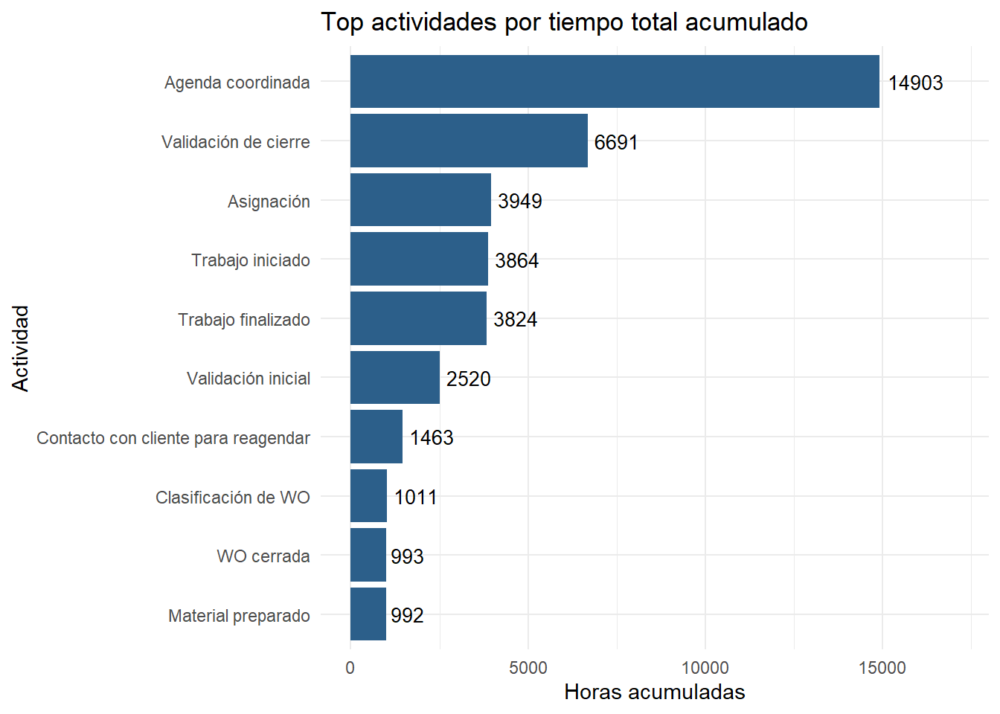
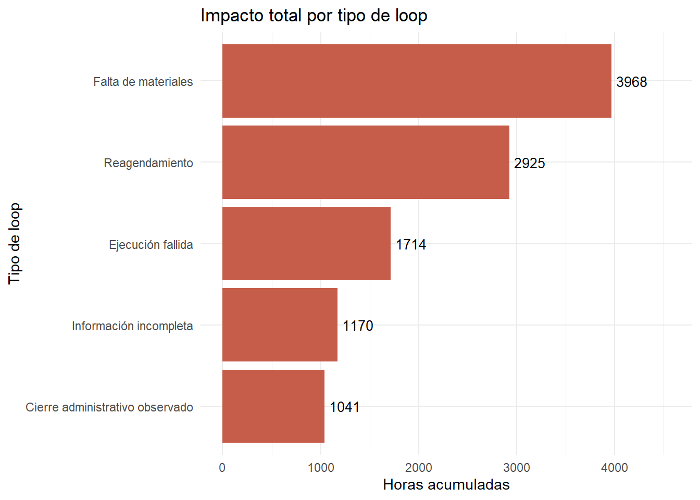
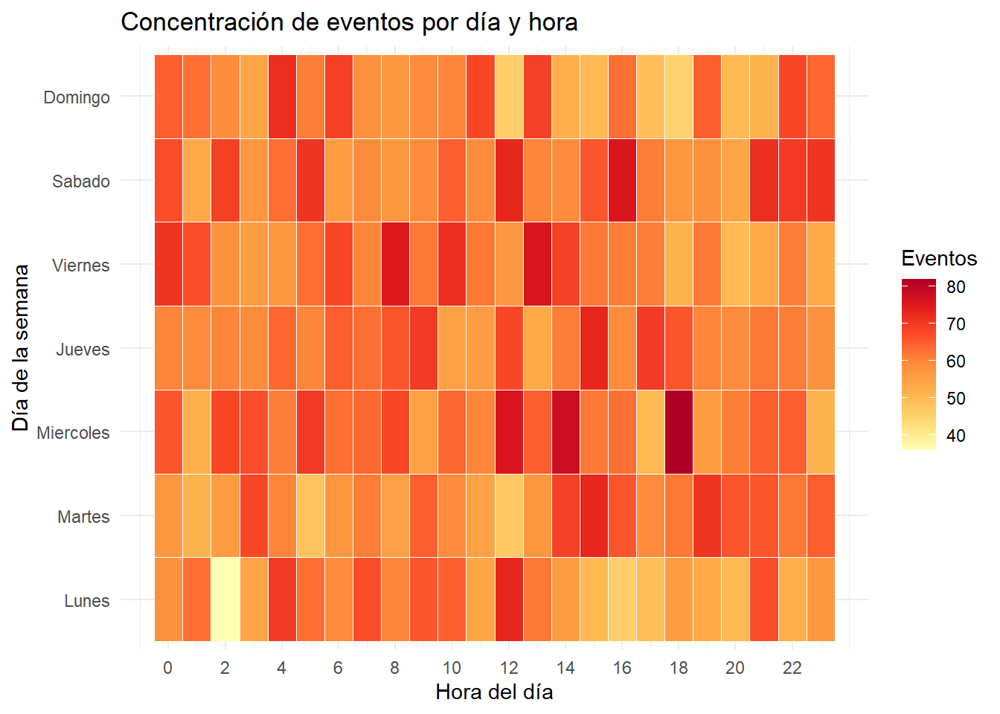
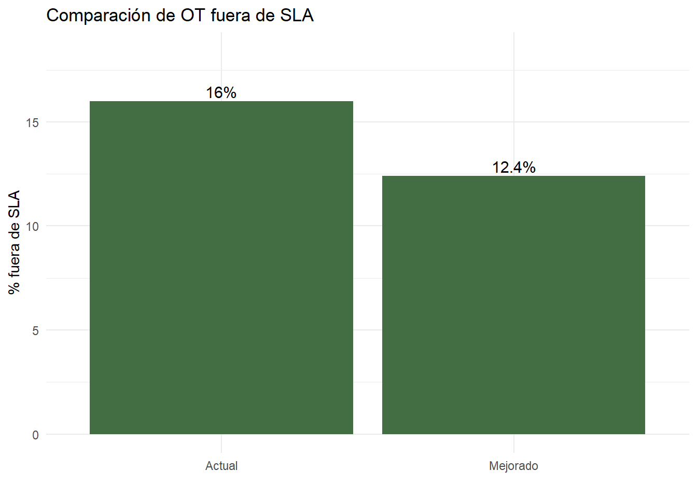
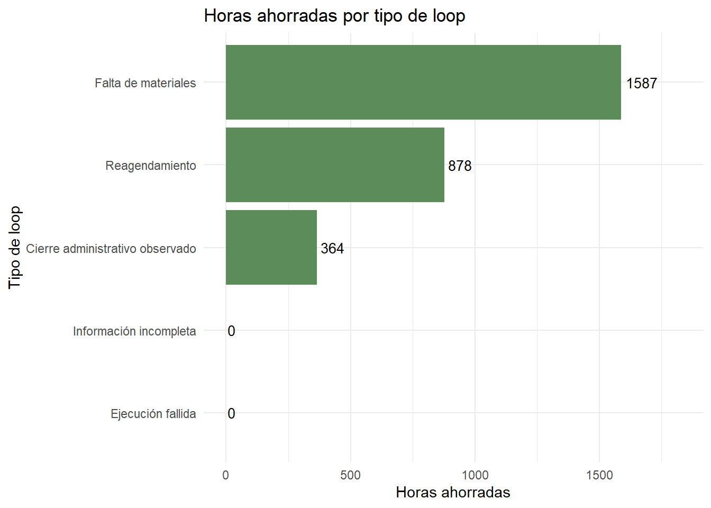

Este proyecto simula y analiza el ciclo de vida de órdenes de trabajo en una empresa de servicios. El objetivo es identificar ineficiencias operativas, loops de reproceso, cuellos de botella y su impacto en el cumplimiento de SLA.
El enfoque replica un escenario habitual en operaciones: existen órdenes que avanzan de forma lineal, mientras que otras vuelven a etapas anteriores por falta de información, reagendamientos, problemas de materiales, fallas de ejecución o validaciones administrativas.
OT analizadas:
1.000
Total logs:
10.276
OT con loops:
35%
OT fuera de SLA:
16%
Objetivo: el análisis busca mostrar que no todas las demoras se explican por la ejecución técnica. Una parte relevante del tiempo total puede estar asociada a esperas, validaciones, reprocesos y coordinación entre áreas.
2 Contexto del problema
Muchas organizaciones gestionan procesos operativos a través de sistemas transaccionales. Estos sistemas registran eventos (logs), cambios de estado y acciones realizadas por usuarios o áreas.
Sin embargo, esos registros suelen usarse principalmente para trazabilidad y no siempre para detectar problemas estructurales del proceso.
Este proyecto utiliza un enfoque de process mining, basado en logs de eventos, para reconstruir el flujo operativo y medir:
tiempo total de resolución;
frecuencia de loops;
impacto de los reprocesos;
actividades con mayor duración acumulada;
cumplimiento de SLA;
impacto potencial de mejoras operativas.
3 Datos simulados
El dataset principal es un event log, donde cada fila representa una acción registrada sobre una orden de trabajo.
Campos principales:
Ver código
diccionario <-data.frame(Campo =c("ot_id","event_id","timestamp","actividad","area","usuario","tipo_ot","prioridad","zona","canal_origen","es_loop","tipo_loop","duracion_horas_desde_evento_anterior","sla_objetivo_horas" ),Descripcion =c("Identificador único de la orden de trabajo","Identificador único del evento","Fecha y hora del evento (log)","Actividad registrada en el proceso","Área responsable del evento","Usuario que ejecuta la acción","Tipo de orden de trabajo","Prioridad asignada","Zona operativa","Canal de origen","Indicador de evento asociado a loop o reproceso","Tipo de loop identificado","Tiempo transcurrido desde el evento anterior","Tiempo máximo esperado de resolución según prioridad" ))kable(diccionario, align ="ll") %>%kable_styling(full_width =FALSE, bootstrap_options =c("striped", "hover"))
Campo
Descripcion
ot_id
Identificador único de la orden de trabajo
event_id
Identificador único del evento
timestamp
Fecha y hora del evento (log)
actividad
Actividad registrada en el proceso
area
Área responsable del evento
usuario
Usuario que ejecuta la acción
tipo_ot
Tipo de orden de trabajo
prioridad
Prioridad asignada
zona
Zona operativa
canal_origen
Canal de origen
es_loop
Indicador de evento asociado a loop o reproceso
tipo_loop
Tipo de loop identificado
duracion_horas_desde_evento_anterior
Tiempo transcurrido desde el evento anterior
sla_objetivo_horas
Tiempo máximo esperado de resolución según prioridad
4 Flujo general del proceso
El proceso base de una orden de trabajo se representa de forma simplificada como:
OT creada → Validación inicial → Clasificación de OT → Asignación → Agenda coordinada → Trabajo iniciado → Trabajo finalizado → Validación de cierre → OT cerrada
Este flujo puede tener desvíos o loops por eventos como:
información incompleta;
reagendamiento;
falta de materiales;
ejecución fallida;
cierre administrativo observado.
5 Análisis del lead time
El lead time representa el tiempo total transcurrido desde la creación de la OT hasta su cierre.
ggplot(ot_base, aes(x = lead_time_horas)) +geom_histogram(bins =40, fill ="#4E7C7B", color ="white") +labs(title ="Distribución del lead time de las OT",x ="Lead time (horas)",y ="Cantidad de OT" ) +theme_minimal()

Interpretación: aunque la mayoría de las OTs presentan tiempos de resolución controlados, existe un grupo reducido de órdenes con duraciones significativamente superiores que probablemente concentran gran parte del impacto operativo y del riesgo de incumplimiento de SLA.
6 Impacto de los loops
Los loops representan retornos a etapas previas del proceso o acciones adicionales necesarias para poder avanzar, lo cual puede derivar en deficiencias y por ende en un incremento de tiempos.
Ver código
impacto_loop_vs_no_loop %>%mutate(lead_time_promedio =round(lead_time_promedio, 2),lead_time_mediano =round(lead_time_mediano, 2),fuera_sla_pct =round(fuera_sla_pct, 2) ) %>%kable(col.names =c("Grupo","Cantidad OT","Lead time promedio","Lead time mediano","% fuera SLA" ),align ="lrrrr" ) %>%kable_styling(full_width =FALSE, bootstrap_options =c("striped", "hover"))
Grupo
Cantidad OT
Lead time promedio
Lead time mediano
% fuera SLA
Con loop
350
61.87
56.33
32.29
Sin loop
650
31.77
30.45
7.23
Ver código
ot_base %>%mutate(grupo_loop =if_else(tuvo_loop ==1, "Con loop", "Sin loop")) %>%ggplot(aes(x = grupo_loop, y = lead_time_horas)) +geom_boxplot(fill ="#8AAE92", outlier.alpha =0.35) +labs(title ="Lead time de OT con y sin loops",x ="",y ="Lead time (horas)" ) +theme_minimal()

Insight operativo: los loops representan uno de los principales factores de deterioro del desempeño operativo. Las OTs con reprocesos muestran tiempos de resolución significativamente más altos y una probabilidad considerablemente mayor de incumplir SLA, evidenciando que gran parte de la ineficiencia operativa se concentra en órdenes que no siguen el flujo estándar del proceso.
7 Cuellos de botella por actividad
Se consideran cuellos de botella aquellas actividades que concentran una proporción relevante del tiempo total o presentan alta variabilidad.
cuellos_por_actividad %>%slice_head(n =10) %>%ggplot(aes(x =reorder(actividad, duracion_total_horas), y = duracion_total_horas)) +geom_col(fill ="#2C5F8A") +geom_text(aes(label =round(duracion_total_horas, 0)),hjust =-0.15,size =3.5 ) +coord_flip() +expand_limits(y =max(cuellos_por_actividad$duracion_total_horas) *1.15) +labs(title ="Top actividades por tiempo total acumulado",x ="Actividad",y ="Horas acumuladas" ) +theme_minimal()

Interpretación operativa: los principales cuellos de botella se concentran en actividades de coordinación y validación más que en la ejecución técnica propiamente dicha. La etapa de agenda coordinada representa el mayor consumo de tiempo acumulado del proceso, mientras que actividades asociadas a reagendamientos presentan alta variabilidad y potencial impacto sobre SLA.
8 Impacto por tipo de loop
Ver código
impacto_por_tipo_loop %>%ggplot(aes(x =reorder(tipo_loop, duracion_total_horas), y = duracion_total_horas)) +geom_col(fill ="#C65D4A") +geom_text(aes(label =round(duracion_total_horas, 0)),hjust =-0.15,size =3.5 ) +coord_flip() +expand_limits(y =max(impacto_por_tipo_loop$duracion_total_horas) *1.15) +labs(title ="Impacto total por tipo de loop",x ="Tipo de loop",y ="Horas acumuladas" ) +theme_minimal()

Lectura: aunque existen múltiples tipos de reproceso dentro del flujo operativo, los eventos vinculados a materiales y reagendamientos explican una proporción significativamente mayor del tiempo perdido. Esto permite priorizar iniciativas de mejora sobre aquellos loops con mayor impacto potencial en lead time y cumplimiento de SLA.
9 Concentración temporal de eventos
Ver código
event_log_heatmap <- event_log %>%mutate(dia_semana =factor(weekdays(timestamp),levels =c("lunes", "martes", "miércoles", "jueves", "viernes", "sábado", "domingo"),labels =c("Lunes", "Martes", "Miercoles", "Jueves", "Viernes", "Sabado", "Domingo") ),hora_evento =hour(timestamp) ) %>%count(dia_semana, hora_evento, name ="cantidad_eventos")ggplot( event_log_heatmap,aes(x = hora_evento, y = dia_semana, fill = cantidad_eventos)) +geom_tile(color ="white", linewidth =0.2) +scale_fill_distiller(palette ="YlOrRd", direction =1) +scale_x_continuous(breaks =seq(0, 23, 2)) +labs(title ="Concentración de eventos por día y hora",x ="Hora del día",y ="Día de la semana",fill ="Eventos" ) +theme_minimal()

Interpretación operativa: el análisis temporal permite identificar patrones de concentración de actividad que pueden utilizarse para ajustar capacidad operativa, planificación de recursos y distribución de carga de trabajo. Este tipo de análisis resulta especialmente útil para detectar potenciales ventanas de saturación operacional.
10 Pareto de tiempo por actividad
Este análisis permite identificar cuáles son las actividades que explican la mayor parte del impacto total dentro de un proceso. Basado en el principio 80/20 (aunque no necesariamente debe ser así), este enfoque busca detectar el subconjunto de actividades que concentra la mayor proporción del tiempo operativo acumulado y que, por lo tanto, representa las principales oportunidades de mejora.
Insights claves: el análisis muestra que una cantidad relativamente reducida de actividades concentra gran parte del tiempo total consumido por el proceso. En particular, “Agenda coordinada” representa por sí sola aproximadamente el 35% del tiempo acumulado, mientras que las primeras cinco actividades explican cerca del 80% del impacto total. Esto sugiere que iniciativas focalizadas sobre coordinación operativa, validaciones y ejecución técnica podrían generar mejoras significativamente mayores que intervenciones distribuidas homogéneamente sobre todo el proceso.
11 Simulación de mejoras
La etapa final del análisis evalúa un escenario operativo alternativo con el objetivo de estimar el impacto potencial de determinadas iniciativas de mejora sobre el desempeño general del proceso.
La simulación se construyó modificando parcialmente algunos de los principales factores de ineficiencia identificados durante el análisis previo, particularmente aquellos asociados a coordinación operativa, disponibilidad de materiales y validaciones administrativas.
Las mejoras simuladas incluyen:
reducción parcial de loops de reagendamiento;
disminución de demoras asociadas a falta de materiales;
reducción de cierres administrativos observados;
optimización de tiempos en “Agenda coordinada”;
reducción de tiempos en “Validación de cierre”.
El objetivo no es representar una solución exacta, sino mostrar cómo pequeñas mejoras focalizadas sobre los principales cuellos de botella pueden generar impactos relevantes sobre indicadores operativos y cumplimiento de SLA.
Ver código
archivo_mejoras <-file.path(dir_outputs, "tablas", "simulacion_mejoras_ot.xlsx")if (file.exists(archivo_mejoras)) {library(readxl) kpis_comparativos <-read_excel(archivo_mejoras, sheet ="kpis_comparativos") comparativo_ot <-read_excel(archivo_mejoras, sheet ="comparativo_ot") ahorro_tipo_loop <-read_excel(archivo_mejoras, sheet ="ahorro_tipo_loop")kable(kpis_comparativos, align ="lrr") %>%kable_styling(full_width =FALSE, bootstrap_options =c("striped", "hover"))} else {cat("No se encontró el archivo de simulación de mejoras.")}
metrica
actual
mejorado
OT analizadas
1000.00
1000.00
Lead time promedio
42.31
36.99
Lead time mediano
35.56
32.41
P95 lead time
87.67
70.62
% OT fuera SLA
16.00
12.40
Horas totales consumidas
42307.60
36988.56
Horas totales ahorradas
0.00
5319.04
% reduccion de horas
0.00
12.57
OT fuera SLA
160.00
124.00
OT recuperadas para SLA
0.00
36.00
La comparación entre escenarios muestra una mejora consistente sobre los principales indicadores operativos. El escenario mejorado reduce el lead time promedio, disminuye la dispersión de casos extremos y logra recuperar órdenes que originalmente incumplían SLA. Además, la reducción de más de 5.000 horas acumuladas evidencia el efecto que pueden tener mejoras relativamente focalizadas sobre el desempeño global del proceso.
Ver código
if (exists("comparativo_ot")) { sla_comparativo <-data.frame(escenario =c("Actual", "Mejorado"),fuera_sla_pct =c(mean(comparativo_ot$fuera_sla_actual) *100,mean(comparativo_ot$fuera_sla_mejorado) *100 ) )ggplot(sla_comparativo, aes(x = escenario, y = fuera_sla_pct)) +geom_col(fill ="#436E43") +geom_text(aes(label =paste0(round(fuera_sla_pct, 1), "%")),vjust =-0.3,size =4 ) +expand_limits(y =max(sla_comparativo$fuera_sla_pct) *1.15) +labs(title ="Comparación de OT fuera de SLA",x ="",y ="% fuera de SLA" ) +theme_minimal()}

La reducción del porcentaje de OT fuera de SLA refleja el impacto directo de disminuir reprocesos y tiempos de espera dentro del flujo operativo. Aunque las mejoras aplicadas son parciales y simuladas, el resultado muestra cómo intervenciones sobre actividades críticas pueden traducirse rápidamente en mejoras perceptibles sobre cumplimiento y nivel de servicio.
Ver código
if (exists("ahorro_tipo_loop")) {ggplot( ahorro_tipo_loop,aes(x =reorder(tipo_loop, horas_ahorradas), y = horas_ahorradas) ) +geom_col(fill ="#5b8c5a") +geom_text(aes(label =round(horas_ahorradas, 0)),hjust =-0.15,size =3.5 ) +coord_flip() +expand_limits(y =max(ahorro_tipo_loop$horas_ahorradas) *1.15) +labs(title ="Horas ahorradas por tipo de loop",x ="Tipo de loop",y ="Horas ahorradas" ) +theme_minimal()}

El mayor ahorro potencial se concentra en loops asociados a falta de materiales y reagendamientos, reforzando la hipótesis de que gran parte de las ineficiencias del proceso provienen de problemas de coordinación y abastecimiento más que de la ejecución técnica en sí misma. Esto permite priorizar iniciativas con mayor retorno operativo potencial.
Insight estratégico: la simulación evidencia que pequeñas mejoras focalizadas sobre coordinación operativa, materiales y validaciones pueden generar reducciones significativas en horas consumidas y órdenes fuera de SLA. Este enfoque permite priorizar iniciativas con mayor impacto potencial antes de avanzar hacia implementaciones reales.
12 Conclusiones
El análisis demuestra cómo un event log operativo puede transformarse en una herramienta de diagnóstico capaz de revelar ineficiencias, reprocesos y oportunidades de mejora que normalmente permanecen ocultas dentro de los sistemas transaccionales.
A través de la reconstrucción del flujo operativo fue posible identificar no solo cuánto tiempo consumen las órdenes de trabajo, sino también dónde se generan las principales demoras y qué tipos de eventos impactan más fuertemente sobre el cumplimiento de SLA.
Principales hallazgos del análisis:
Los loops operativos representan uno de los principales factores de incremento del lead time.
Gran parte del tiempo total consumido no se origina en la ejecución técnica, sino en actividades de coordinación, validación y espera.
Las actividades asociadas a agenda, materiales y reagendamientos concentran una proporción significativa del impacto operativo total.
El análisis de percentiles permite detectar actividades con alta variabilidad y comportamiento extremo que no siempre se observan mediante promedios.
La simulación de mejoras evidencia que intervenciones focalizadas pueden generar reducciones relevantes en horas consumidas y órdenes fuera de SLA.
En conjunto, el proyecto muestra cómo técnicas simples de process mining y análisis operacional pueden aportar visibilidad sobre procesos complejos y servir como soporte para iniciativas de mejora continua basadas en datos.
13 Recomendaciones operativas
A partir de los hallazgos identificados, las principales iniciativas de mejora deberían enfocarse sobre aquellas actividades y loops con mayor impacto acumulado sobre lead time y SLA.
Las oportunidades prioritarias detectadas son:
fortalecer procesos de preparación y disponibilidad de materiales para reducir reprocesos asociados a abastecimiento;
incorporar validaciones previas antes del agendamiento para minimizar reagendamientos y órdenes incompletas;
optimizar actividades de coordinación operativa, particularmente aquellas vinculadas a agenda y asignación;
estandarizar criterios de validación y cierre administrativo para reducir observaciones y retrabajos;
monitorear periódicamente métricas de lead time, SLA y loops operativos para detectar desvíos tempranamente;
priorizar actividades con altos valores de p95, dado que suelen representar eventos extremos con fuerte impacto operativo.
Este enfoque permitiría evolucionar desde una gestión reactiva basada únicamente en cumplimiento hacia un modelo de mejora continua apoyado en evidencia operacional y análisis de procesos.